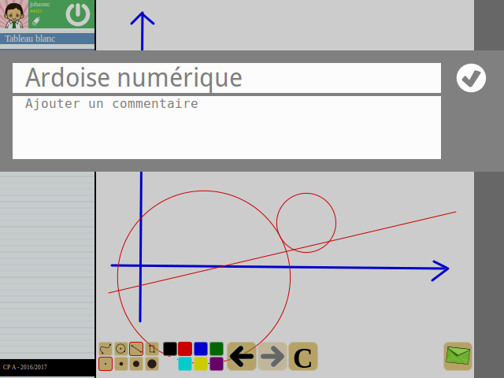
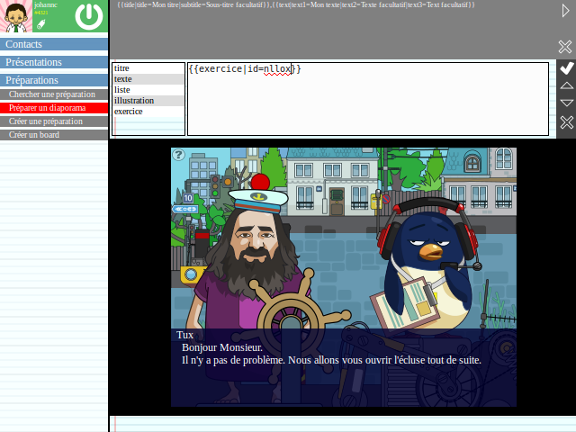
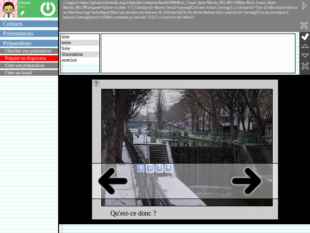
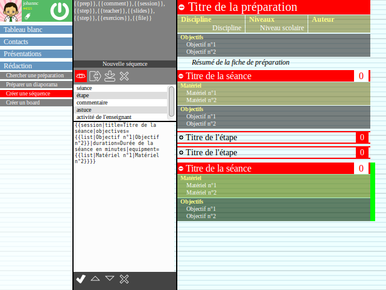
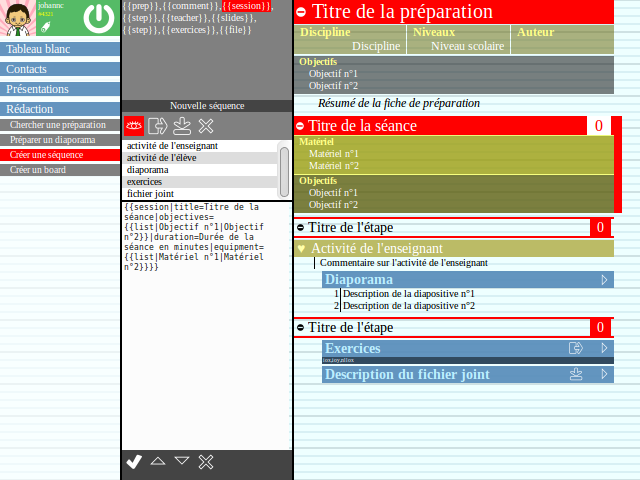

TiBIbu est une ardoise numérique pouvant être utilisée par les étudiants, mais aussi par les enseignants en tant que tableau blanc interactif. Pour ces derniers, TiBIbu peut servir également d'outil d'édition et de gestion de fiches de préparations. Toutes les fiches créées avec l'application sont utilisables par tous, quel qu'en soit l'auteur, et il est ainsi possible de construire en quelques clics, une bibliothèque personnelle accessible à tout moment. Chaque fiche comprend un certain nombre d'informations utiles au bon déroulement d'un cours : des objectifs clairs et une structure adaptée, un enchaînement minuté ainsi que de nombreux supports. Ces supports de cours sont structurés sous la forme de diaporamas destinés à être diffusés sur un écran interactif. Chaque diapositive permet l'affichage de textes, d'illustrations et de vidéos, mais elle peut également supporter des exercices issus de la bases jLoDb. En complément à ces diaporamas, des séries d'exercices peuvent être envoyées directement aux élèves qui devront alors répondre individuellement aux problèmes ainsi reçus sur leur ardoise. Occasionnellement, des liens vers des documents à imprimer pourront venir compléter les fiches de préparation.
L'environnement de travail ciblé par TiBIbu consiste idéalement en une classe où le professeur disposerait d'un tableau interactif et les élèves de tablettes ou d'ordinateurs personnels. Tout le monde étant évidemment connecté au réseau internet. Cette configuration est, certes, très peu répandue actuellement, mais il n'est pas impossible qu'elle devienne la norme à moyen terme. Cela étant dit, les fiches de préparations créées par le logiciel permettent une utilisation dégradée tout à fait satisfaisante même lorsque les éléments constitutifs de l'environnement cible ne sont pas tous présents.
TiBIbu est un module du projet jLoDb. En tant que tel, il est directement accessible depuis la section Modules de la page principale du projet.
TiBIbu peut être utilisé en tant qu'application web sur la plupart des plateformes mobiles. La procédure d'installation, qui est la même pour tous les modules, est détaillé dans le chapitre Modules de ce guide.
TiBIbu demande, avant toute chose, que l'utilisateur s'identifie. Le système d'identification est commun entre tous les modules du projet jLoDb. Aussi, un compte utilisé sur TiBIbi ou TiBIbo est également reconnu sur TiBIbu. Et inversement. La création d'un compte et sa connexion s'effectuant de la même façon sur TiBIbi, ces modalités ne devraient pas poser de problème, ici. En cas de difficulté persistante, n'hésitez pas à retourner au chapitre traitant de la connexion dans la section TiBIbi du manuel.
Il est important de bien comprendre ici que le système d'identification utilisé par jLoDb n'impose pas d'identifiant unique. Deux comptes peuvent partager un même identifiant. Ils seront simplement différenciés à la connexion par leur mot de passe et, par une valeur de 4 chiffres précédée d'un dièse lors d'une recherche de contact. Cette valeur sera appelée tag dans la suite de cette documentation.
Le profil de l'utilisateur est affiché dans la zone verte située en haut à gauche de l'écran. On peut y voir l'avatar de l'utilisateur, son identifiant ainsi que le tag permettant de différencier son compte de ceux utilisant le même identifiant. Un bouton de déconnexion permet à l'utilisateur de quitter sa session de travail. Enfin, une icône en forme de crayon, dont l'action sera présentée plus loin, finit de compléter cette zone de profil. Compte tenu de la dimension communautaire et social du logiciel, il est important de disposer d'un profile utilisateur correctement renseigné. En cliquant sur le portrait, il est possible d'éditer le profil utilisateur.
S'il est possible de changer son mot de passe en renseignant les 3 informations que sont l'ancien mot de passe, le nouveau mot de passe et sa confirmation, cette opération n'est absolument pas obligatoire et ne doit être accomplie que lorsque l'utilisateur souhaite réellement changer son mot de passe.
Même si cela n'est pas non plus obligatoire, il est fortement conseillé de renseigner son nom et son prénom afin que vos amis puisse vous retrouver plus facilement. Enfin, un e-mail devrait permettre, à terme, d'initialiser un nouveau mot de passe en cas de perte du précédent (en cours de développement).
Il est enfin possible de modifier l'aspect de son avatar. En cliquant sur le portrait présent dans la fenêtre, l'éditeur apparaît, vous permettant ainsi de modifier un grand nombre de caractéristiques physiques (cheveux, nez, bouche, etc.). Chaque avatar est défini par un code unique qu'il est tout à fait possible de partager et d'échanger. Le code correspondant à l'exemple ci-contre est VJCCC4gkBmAC8iD6mBLLG
Une fois votre profil utilisateur modifié, cliquer sur le bouton de validation permet d'enregistrer ces changements tandis que le bouton d'annulation permet, au contraire, de les oublier.

Le menu principal est la colonne à gauche de l'écran qui permet d'accéder aux différentes fonctionnalités du logiciel. Le contenu de ce menu dépend du mode utilisé. L'utilisateur connecté en tant que lecteur (ou élève) ne trouvera pas les mêmes fonctionnalités qu'un utilisateur connecté en tant que rédacteur (ou enseignant). Par défaut, toute connexion se fait en mode lecteur. Pour passer en mode rédacteur, il faut cliquer sur l'icone en forme de crayon dans le menu utilisateur et entrer le mot de passe fourni par l'administrateur du site.


L'ardoise ou tableau blanc est la page d'acceuil du site. Depuis cette zone de travail, il est possible de dessiner librement avec les outils proposés en bas de l'écran.
4 types de figures sont disponibles : le dessin libre, le cercle et le segment et enfin le rectangle. Il est possible de définir également pour chaque tracé une épaisseur ainsi qu'une couleur parmi les 8 proposées. Enfin, 3 boutons de controle permettent respectivement d'annuler le dernier tracé, de le restaurer ou tout simplement d'effacer intégralement l'ardoise.
Un professeur peut, s'il le souhaite, envoyer le contenu de son tableau blanc à ses élèves grâce au bouton situé en bas à droite de l'écran. Alors, une zone de textes apparaît permettant d'y ajouter éventuellement un intitulé ainsi qu'un commentaire. En cliquant sur le bouton de validation, le tableau blanc est envoyé. Les élèves pourront alors récupérer ce message depuis leur messagerie. Dans le cas du professeur, pour que le bouton d'envoie soit actif (et non transparent), il faut que du contenu soit déjà tracé sur le tableau blanc mais aussi qu'un cercle de contacts ait été préalablement sélectionné. Cette sélection est détaillée plus en bas.
Les notions de contacts et de cercles de contacts sont 2 concepts importants au sein de TiBIbu. C'est grâce à ces éléments qu'il va être possible d'envoyer des exercices ou d'en recevoir, d'enregistrer des progressions et même de travailler collaborativement. Cependant certaines fonctionnalités sont absentes ou bridées en mode lecteur. Un élève ne peut pas chercher de contact et ne peut créer aucun cercle. La création de contacts reste à la seule initiative du professeur.
Grâce à la zone de texte en haut de l'écran, il est possible de rechercher des connaissances parmi les utilisateurs ayant ouvert un compte sur le même serveur. Une fois la recherche lancée par un simple clic sur l'icône en forme de loupe, sont affichées à l'écran les personnes ayant un identifiant identique à la valeur demandée, ou un nom et un prénom proches de cette valeur. Il ne faut pas oublier que des utilisateurs différents peuvent avoir un même identifiant. Il est donc important de vérifier le tag de chacun, en cas de doute sur la personne recherchée. Chaque bouton '+' permet d'envoyer une invitation à l'utilisateur concerné. Celui-ci pourra alors choisir de valider ou non cette demande de contact.
L'espace 'demandes en cours' permet de surveiller l'ensemble des invitations envoyées auxquelles les destinataires n'ont toujours pas répondu. En cas de non réponse et bien que cela ne soit pas obligatoire, il est possible de supprimer ces demandes de contacts sans effet.
Inversement, la page 'invitations' permet de prendre connaissance des demandes de contacts envoyées par d'autres utilisateurs. Il est alors possible de valider ou non ces invitations. En cas de validation, les deux utilisateurs deviennent des contacts l'un pour l'autre.


Cette page liste les différents contacts connus de l'utilisateur. Leur nombre pouvant être relativement élevé, il est conseillé de définir des cercles de connaissances dans lesquels ces différents contacts pourront être répartis.
Les 3 boutons en haut de l'écran permettent respectivement de créer un cercle, d'en modifier le nom et enfin de le supprimer par double-clic. Attention, supprimer un cercle ne supprime pas les utilisateurs qui y sont référencés. Le menu de sélection central permet d'activer un cercle et de n'afficher que les contacts appartenant à ce cercle. Par défaut, en l'absence de cercle actif, tous les contacts connus sont affichés. Autre règle importante à connaître : un contact peut appartenir à plusieurs cercles.
Le cercle sélectionné sur cette page s'affiche dans le cadre noir, en bas à gauche de l'écran. Par la suite, certaines actions (communication, envoie de documents, etc) vont pouvoir s'appliquer directement sur ce cercle sélectionné.
Il est possible de sélectionner un contact en cliquant dessus ou de sélectionner tous les contacts en cliquant sur leur nombre en haut de l'écran. Un contact sélectionné passe en rouge.
Lorsqu'un ou plusieurs contacts sont sélectionnés, le menu inférieur s'active et devient utilisable. Il va être alors possible de déplacer les contacts sélectionnés vers un cercle de connaissances, de les retirer du cercle actif ou de les supprimer tout simplement en tant que contacts.
Enfin, un bouton en forme d'enveloppe permet d'envoyer un message individuel au contact concerné. Comme pour le contenu du tableau blanc, une zone de textes apparaît permettant à l'émetteur de rédiger son message.
L'espace de rédaction regroupe l'ensemble des fonctionnalités qui vont permettre à l'utilisateur identifié en tant que rédacteur, de rédiger du contenu pédagogique.
Depuis cette page, l'utilisateur peut accéder aux différentes séquences rédigées et stockées sur le serveur. En cliquant sur l'intitulé d'une séquence, l'utilisateur peut obtenir un aperçu complet de celle-ci. Dans le cas où l'utilisateur est le rédacteur de la séquence, une icône en forme de crayon permet d'éditer et de modifier le document.
Le diaporama, en tant que support de cours, est un élément important des fiches de préparation. Sa conception fait l'objet d'une page dédiée depuis laquelle il va être possible de concevoir les différentes diapositives de la présentation.
La page se divise en plusieurs parties.

La zone supérieure affiche le contenu du diaporama. Chaque fois qu'une diapositive sera validée, celle-ci viendra s'ajouter dans cette zone. Chaque diapositive peut être sélectionnée individuellement et voir son contenu affiché dans la zone au-dessous afin d'y être modifiée. Enfin, trois boutons, situés plus à droite, permettent respectivement de lancer le diaporama, d'exporter son contenu sous format texte ou bien de le supprimer intégralement par double-clic.
La zone intermédiaire permet de définir une diapositive. La partie de gauche propose des gabarits (ou modèles) qu'il sera possible de modifier dans la partie plus à droite. Chaque diapositive est définie par un texte formaté ainsi : {{nom du gabarit|paramètre1=valeur1|paramètre2=valeur2}} où le nombre de paramètres ainsi que leur nom respectif dépendent du type de gabarit utilisé. Un aperçu de la diapositive est affiché dans la zone inférieure.
En règle générale, seule une diapositive est définie dans cette zone intermédiaire. Il est cependant possible d'importer par copier-coller plusieurs diapositives en une seule opération.
Les gabarits actuellement disponibles sont :

La diapositive en cours de rédaction peut être de 2 natures différentes. Elle peut être une nouvelle diapositive auquel cas, le bouton de validation permet d'insérer cette diapositive en fin de diaporama. Elle peut être aussi une diapositive existante, qui est alors sélectionnée dans la zone supérieure, en cours de modification. Ici, le bouton de validation remplace la diapositive sélectionnée par le nouveau contenu.

Les 3 boutons ci-contre ne s'appliquent que dans le cas d'une diapositive sélectionnée dans la zone supérieure. Ils permettent respectivement de supprimer cette diapositive de la présentation (par double-clic) ou de la déplacer au sein de cette présentation vers l'avant ou vers l'arrière.
Enfin la zone inférieure est la zone de rendu des différents éléments. Elle permet d'afficher une diapositive lorsque celle-ci est en cours de rédaction ou le diaporama complet après que l'utilisateur a cliqué sur le bouton de lecture depuis la zone supérieure.
Le bouton en haut à gauche de la fenêtre permet d'afficher le controleur de diapositives depuis lequel il est possible de passer à la diapositive suivante, de retourner à la diaposivite précédante ou de choisir directement la diapositive à afficher.
Dans cet espace, le rédacteur va pouvoir créer une fiche de préparation décrivant le déroulement d'une séquence pédagogique. Pour ce faire, il va pouvoir construire un document de travail en ajoutant successivement les différents éléments qui lui semblent pertinents.
La fenêtre de travail est ici assez similaire à celle de l'éditeur de diaporamas. Les 4 mêmes éléments y sont présents. Dans la première colonne, on retrouve en haut, la description technique de la fiche de préparation, plus bas, la liste des gabarits (ou modèles) pouvant y être ajoutés et enfin la description du gabarit actif. L'espace de droite affiche le rendu de la fiche de préparation.
Chaque élément de la description technique du document située dans la zone supérieure gauche de la fenêtre peut être sélectionné individuellement et voir son contenu affiché dans la zone plus en bas afin d'y être modifié. Le format utilisé est identique à celui des diaporamas si bien que le document peut, lui aussi, être exporté dans un format texte grâce au bouton d'exportation. Le bouton de suppression permet, par double-clic, de supprimer l'intégralité (ou presque) de la séquence.
Dès qu'une modification est apportée au document, le bouton de sauvegarde s'active et permet d'enregistrer la fiche de préparation sur le serveur. Dans le cas d'une première sauvegarde, le code d'identification généré par le serveur est affiché en lieu et place de l'intitulé par défaut "nouvelle séquence".
La fiche de préparation offre deux vues différentes. La première est réservée à l'enseignant seul et présente l'intégralité de la fiche de préparation (conseils pédagogiques inclus). La deuxième vue est destinée à une utilisation en classe et/ou en présence d'élèves. Certains éléments doivent, en cette occasion, rester confidentiels et donc, invisibles. Le bouton ci-contre permet de passer d'une vue à l'autre.
 Juste au-dessous, la liste des gabarits permet de choisir un nouveau gabarit à insérer à la suite de la fiche de présentation. Ce nouveau contenu s'affiche à la fois dans la zone inférieure afin d'y être modifié et dans la zone de rendu surligné en vert. De façon tout à fait similaire, un gabarit déjà présent dans le document est surligné en rouge (et jaune) dans la fenêtre de rendu lorsqu'il est sélectionné. A noter que l'on peut également sélectionner un élément en cliquant dessus depuis la zone de rendu.
Dans la zone inférieure de la colonne de gauche, les différents gabarits sont définis dans un format similaire à celui des diapositives et peuvent être modifiés de la même façon.
Les gabarits actuellement disponibles sont :
Les 4 boutons du menu inférieur permettent respectivement d'insérer un nouveau gabarit (en vert dans la fenêtre de rendu) dans le document, de le déplacer vers l'avant ou l'arrière et enfin de le supprimer par double-clic.